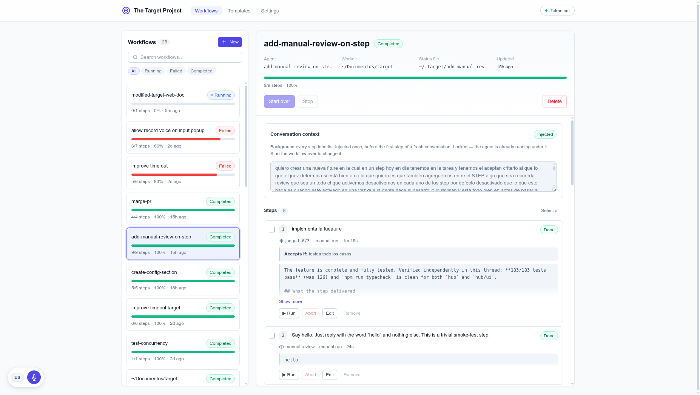
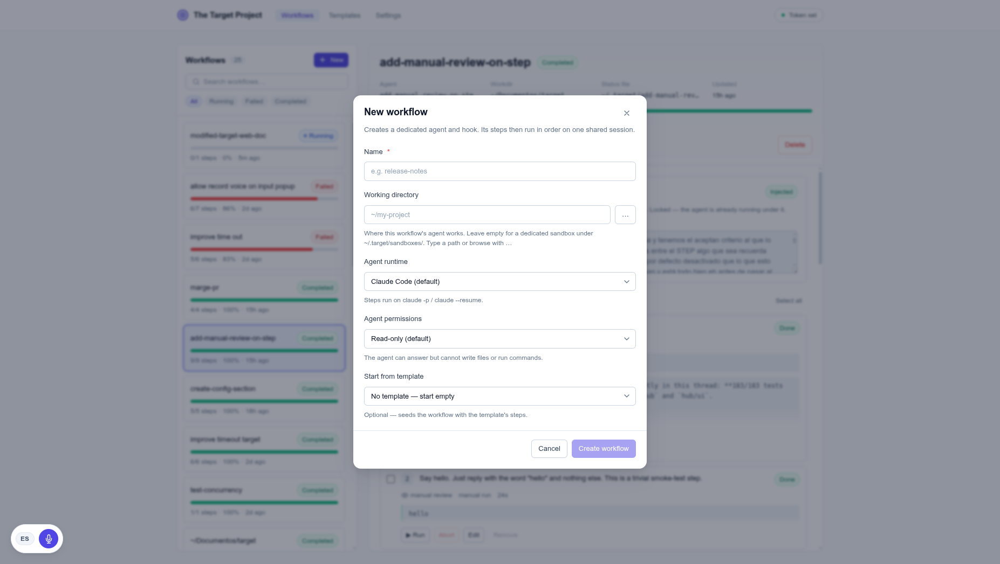
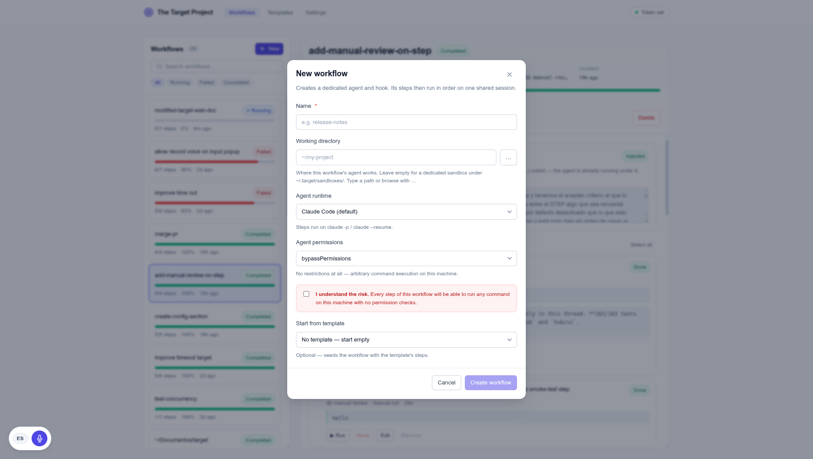
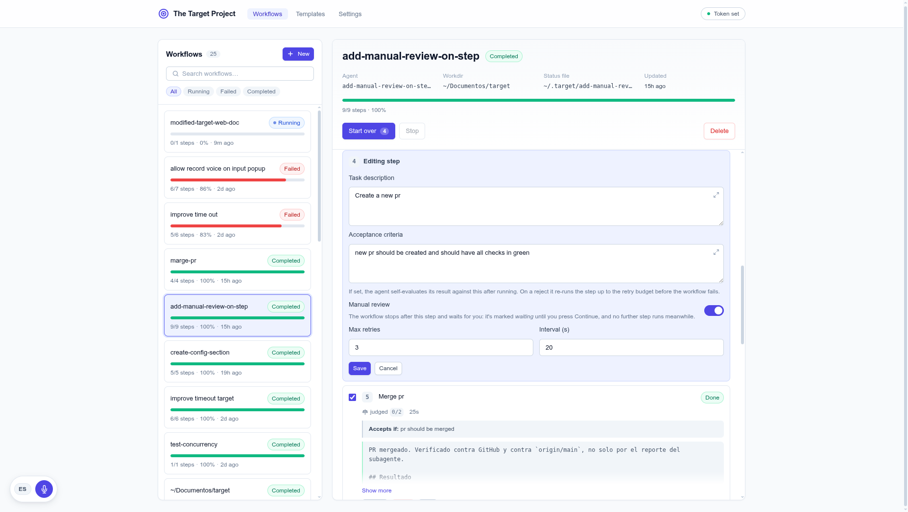
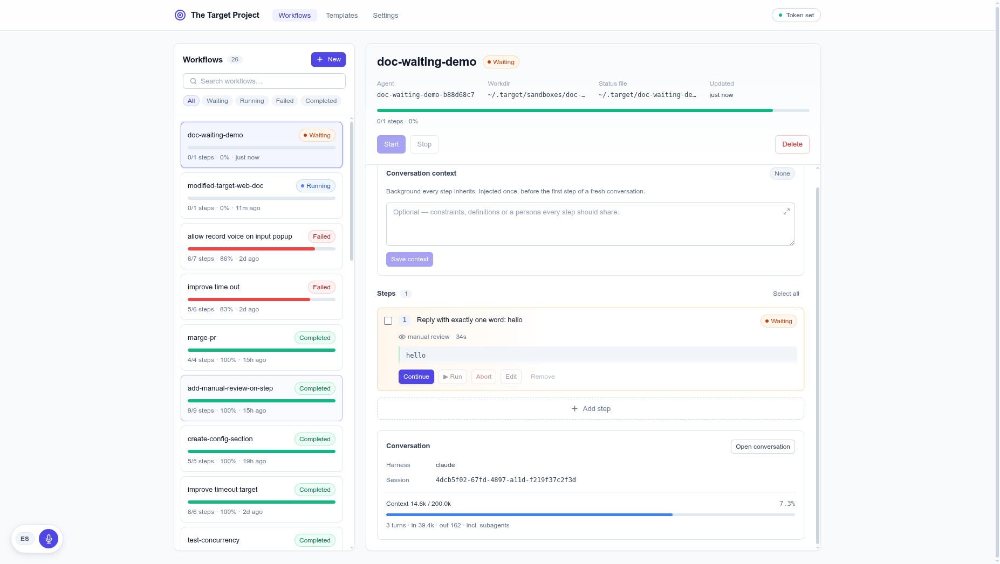
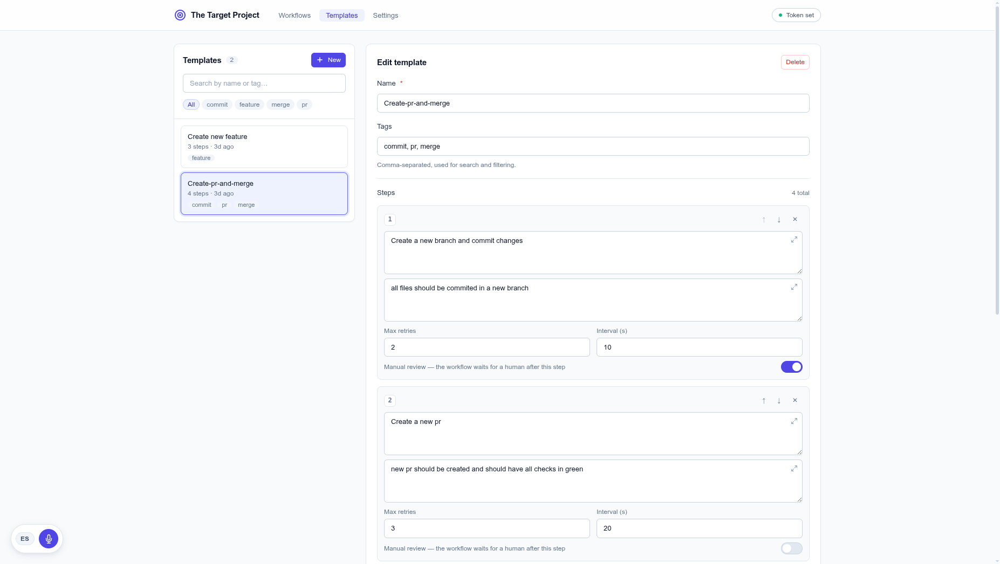
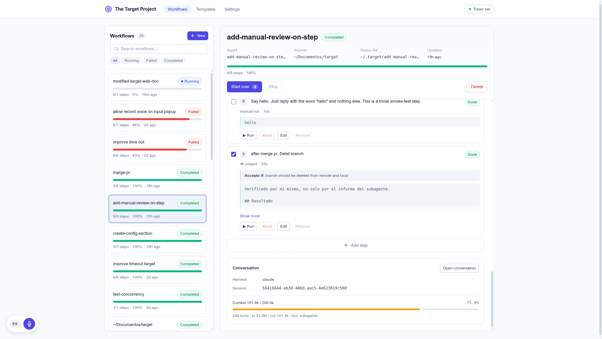
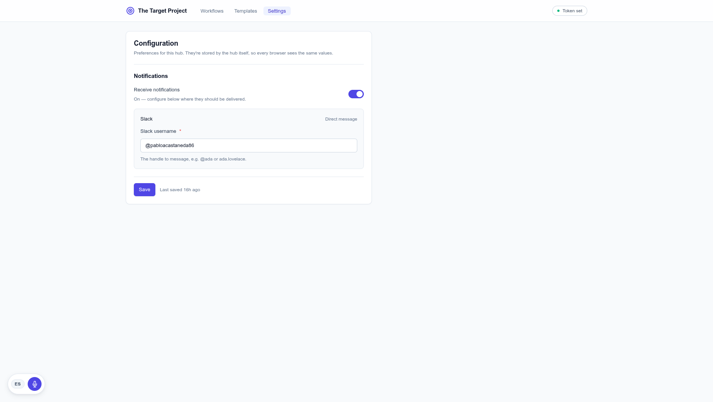
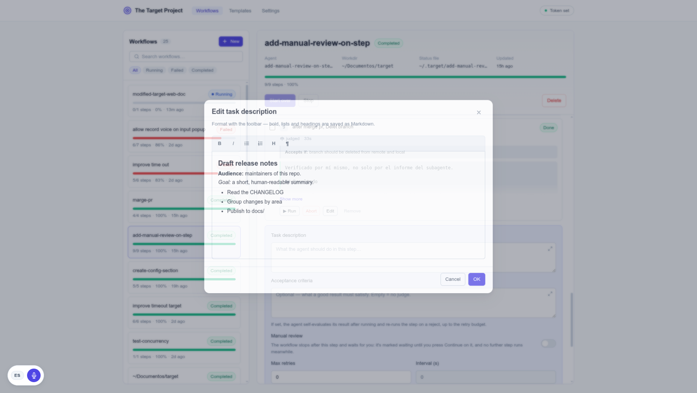

Line up the work. Let the agent run it, one step at a time.
The Target Project is a small local hub. You write a
workflow as a list of steps, and a coding
agent — Claude Code or free-code —
runs them in order, on one shared conversation. You watch the progress, approve
the steps that need a human, and reuse the step lists you repeat. This page walks
through it like a story.
Meet The Target Project
Think of it as a to-do list for a coding agent. Each item on the list is a
step. The agent picks the first one, does it, then moves to the
next — and because every step continues the same conversation, the
agent remembers everything it did before.
You drive it from a web UI at http://127.0.0.1:8893 or from a
target command line. Under the hood it is a tiny, dependency-free
Node 24 service: a SQLite database, a hand-written HTTP server, and a bridge
to agent-webhook-bridge
(the thing that actually spawns the agent for each step).
The whole point is order and memory: steps run one after another,
not in parallel, and each new step resumes the previous session.
So a workflow reads as one long, continuous conversation — not a pile of
unrelated jobs.
The story in five moves
You create a workflow. Give it a name, pick a working folder, choose the agent runtime, where it runs (this machine or a Docker container) and its permissions. A dedicated agent and hook are created for it automatically.
You add steps. Each step is a plain-language task, with optional acceptance criteria, retries, a retry interval, and a “needs a human” toggle.
You press Start. The first step is sent to the agent. When it finishes, the next selected step is sent — always resuming the same conversation.
You watch and steer. A progress bar and a badge track the run. A step that needs review pauses the whole workflow and waits for your Continue.
It finishes. When every selected step is done, the workflow is complete — and it can tell you on Slack that it’s done.
That’s the whole shape. The rest of this page is the details — with screenshots.
The web UI
The UI is a React app served by the hub. Before any of it, a landing
page introduces the project — and the first visit on a machine walks
through a one-time setup: one password, and a recovery
token shown exactly once (save it — it’s the only way to reset a
forgotten password). After that, the app sits behind a sign-in;
one account per machine, everything still 100% local.
Signed in, it has three tabs across the top —
Workflows, Templates and Settings
— with your display name and a Sign out button on the right,
plus a small admin-token button kept for scripts and automation (you don’t need
it while signed in).

The Workflows tab. Top: a rail of cards — search and status filters narrow it, All workflows opens every workflow as a paginated grid. Below: the selected workflow — its badge, progress bar, the conversation context block, and its steps. The brand reads “The Target Project”.
The workflows sit as a row of cards across the top — richer than the old
left-hand list, because at sixty-odd workflows the name alone is rarely enough to
tell them apart, so each card carries the agent, the working directory and a
rounded progress bar with its step count and percentage. The row is sorted to put the
work that needs you first: a workflow waiting on a human sits before
even a running one. Search filters by name or agent, the status chips
narrow to just running, failed, and so on, and a lone filtered card
centres rather than hugging the left edge. All workflows opens the
full set as a paginated page — twelve cards at a time — so finding one among
dozens is a scan, not screen-widths of sideways scrolling. On a phone there is no
sideways rail and no pop-up picker at all: the same cards stack as one full-width
list you scroll with the page, so every workflow is already there and
All workflows is a desktop control.
Pick a workflow and the detail pane opens with everything in the order the work
actually reads: the conversation context it starts from, the
steps that run, and the conversation those steps
produced. The page polls the hub every couple of seconds, so the progress bar and
statuses stay live — and the selected workflow lives in the URL
(#/w/<id>), so a reload or a shared link reopens it.
Create a workflow
Press + New and a dialog opens. It creates a dedicated agent and
hook for the workflow, so each one is fully isolated.

The New workflow dialog. Name, a working directory (typed or browsed), the agent runtime, the agent permissions, and an optional template to seed the steps from.
What you pick here
Working directory — where the agent works. Leave it empty for a private sandbox under ~/.target/sandboxes/, or point it at a real repo. The … button browses the server’s folders.
Agent runtime — Claude Code (the default) or free-code. Only agent CLIs actually installed on this machine are offered (the hub probes each with --version); if none are installed, or the hub can’t be reached to check, the dialog says so and won’t let you create until one is. The engine, judges and retries behave the same either way; only the spawned CLI and the session-id shape differ. The runner is fixed for the workflow’s life — to switch, make a new workflow.
Sandbox — where that runtime runs. This machine is the default and is what The Target Project has always done: the CLI runs as you, on your real filesystem. Docker container runs the very same invocation inside docker run --rm, with only the working directory and the harness’s own state mounted in. It sits right next to the runtime because the two answer different halves of the same question — and because the sandbox is what bounds the permission choice underneath it. See Host or Docker.
Container image — only appears when you pick Docker container. Leave it empty for target-agent:latest, the image built from the repo’s Dockerfile, or name your own: the image is a per-workflow field, so a Python repo and a Node repo can use different toolchains.
Agent permissions — how much the agent may do. Read-only by default: it can answer but can’t write files or run commands. acceptEdits lets it write files inside its sandbox. bypassPermissions removes every check — so it asks you to confirm the risk first.
Start from template — copy a saved step list into the new workflow (more on templates below).

The bypass risk gate.bypassPermissions can’t be turned on by accident — you have to tick the box that spells out exactly what it means.
The conversation context is intentionally not part of this dialog. You add
it afterwards, from the workflow’s detail pane — see
The conversation.
Steps and their statuses
A step is one task written in plain language. Each step has a checkbox (to choose
whether it runs), a status badge, and a row of actions:
▶ Run (run just this step, out of order, on a fresh session),
Abort (force-fail a stuck step), Edit and
Remove.
The statuses, in the order a step can move through them
pendingqueuedrunningjudgingwaitingdonefailed
pending — sitting in the list, not yet run. Only ticked pending steps are ever
dispatched: the checkboxes are synced to the hub the moment you change them, so unticking a step
while the workflow is running really skips it when the in-flight step finishes (and ticking one
really picks it up). A step added mid-run lands unticked for the same reason — it won’t run
until you tick it. When the ticked steps have all finished while unticked pending steps remain, the
run is over: the workflow settles back to draft (or failed) rather than sitting
running with nothing in flight, so you can tick the rest and Start again.
queued — sent to the agent, waiting its turn. Runs are serialized per working directory, so a second step on the same repo waits behind the first. Its timeout clock doesn’t start until it actually begins.
running — the agent is working on it. Next to the elapsed time you’ll see how lively it is: “active 8s ago” or “no activity 6m”.
judging — the step had acceptance criteria, finished its work, and is now self-evaluating the result.
waiting — the step was flagged for a human review and has finished its work; the workflow pauses until you press Continue. (See Human review & waiting.)
done — finished and accepted.
failed — the step (and therefore the workflow) ended in error. If the work actually landed and only the reporting went wrong, you can say so — see Fixing a status by hand.
badge = bar
The workflow’s badge and its progress bar are computed from the same step data, so they can never disagree. A run that ends with a step still failed ends the workflow failed — never completed with a red bar.
Run only the steps you tick
Start, Resume and Start-over send exactly the ticked steps. Tick nothing and the
button disables and tells you why, rather than silently doing nothing. A single
Start button maps to the right action for the status:
start when draft, resume when paused, restart
when completed or failed.
Judge, retries and retry intervals
A step can carry an acceptance criterion — a short sentence
describing what a good result looks like. If it has one, finishing the work
doesn’t mark the step done. Instead the step enters a
judge phase: a second run, on the same session, asks the agent to
look at its own result and answer a yes/no verdict.
Accepted → the step becomes done and the engine moves on.
Rejected → the step is retried, with the judge’s feedback, until the retry budget runs out.
No criterion → no judge phase; the step is a plain one-shot.
Each step has a Max retries and a retry interval
(seconds to wait before each re-run). You set them when you add or edit a step.

Editing a step. Task description, optional acceptance criteria, the Manual review switch, and Max retries / Interval (s). The interval only matters with more than one retry, so it’s disabled below that.
one retry budget, many causes
A judge rejection and a timeout both draw from the same retry budget. A step that times out with retries left is retried (the hung run is killed, the workdir lock freed, and the step re-dispatched on the same session with a note that the last attempt timed out) — only when the budget is spent does it fail for good. The retry count shows as retryCount/maxRetries next to the step.
Require a human review — the waiting status
Some steps shouldn’t just run and move on — you want to look at the
result before the workflow continues. Turn on Manual review on a
step, and when that step finishes its work (and passes its judge, if it has one)
it does not become done. It becomes
waiting, and the whole workflow pauses right there.

A step waiting for you. The waiting badge, the “manual review” tag, the result laid out for you to read, and a single Continue button. Nothing else runs until you press it.
How the gate behaves, in plain words:
Only accepted work waits. If the step fails, or its judge rejects it past the retry budget, it fails as usual — the gate never holds broken work.
Continue is the only way forward. While a workflow is waiting, Start is refused, the step can’t be edited or re-run, and the timeout watchdog leaves it alone — a human may take as long as they need.
Restart is the way out if you don’t want to approve. It resets the held step and runs it again.
It works on one-off runs too. Press ▶ on a gated step and it holds the same way; continuing it just settles the badge back instead of advancing a run.
heads up
If you’ve turned on notifications, the hub can ping you on Slack the moment a step starts waiting — so you don’t have to keep the UI open. The message names the workflow, the step and what to check. The notification is advisory: the hold is the feature; a failed delivery changes nothing.
Fixing a status by hand
Every status here is worked out for you: a step’s comes from what its run
reported, and a workflow’s comes from its steps. That is right almost always,
and wrong in one situation you will eventually hit — the agent
did the work, but the run never got to say so. It ran out of tokens
halfway through the answer, or the result callback was lost, or the judge turned
down a result that was perfectly fine. The step reads failed, the
whole workflow reads failed with it, and the red segment on the
progress bar is for work that is sitting finished on your disk.
Set status… is the answer. There’s one picker beside
the run controls for the workflow, and one in every step’s row of actions.
Pick what really happened, confirm, done.
step: donestep: failedstep: pending
Workflows take completed, failed, paused or
draft. What you can’t set is anything that means
“a job is in flight” — running and
queued aren’t opinions, and waiting belongs to the
human-review gate and its Continue button. For the same reason, a
step that still has a run in the air is refused: Abort it first,
then set its status.
What it does and doesn’t do, in plain words:
It records, it never runs. Marking a failed step done does not re-run it and does not push the workflow forward. Marking one pending doesn’t start it either — it just goes back in the queue for the next Start.
Nothing is rewritten. The result, the session and the timings stay exactly as the run left them, so the conversation still tells the true story. Only the verdict changes — plus the error message, which is dropped when you mark a step done, because a red error under a green badge is the very thing you came here to fix.
The workflow follows its steps. Fix the last failed step and the workflow’s own failed badge clears itself, and the progress bar goes to 100%. You usually don’t need to touch the workflow picker at all.
A workflow status you set sticks. The hub normally re-derives it on every refresh; once you’ve set it yourself it’s left alone — until you Start, Stop, Resume or Start over, at which point the steps are telling the truth again and the hub takes it back.
It’s always visible. A status you set carries a small pencil on its badge (hover it for when), in the list and in the detail, and the workflow’s .md status file says set manually next to it.
on your phone too
Both pickers are native selects, so on a phone they open the system chooser and sit on their own full-width row — the same UI, just laid out for a thumb. Everything here works from the CLI as well: target set-status <id> completed and target set-step-status <id> <stepId> done (run target show <id> to get the step ids).
Templates
If you keep writing the same sequence of steps, save it as a template.
A template is a reusable, ordered list of steps — with their acceptance
criteria, retries, retry intervals and manual-review flags — that you can use
to seed a new workflow or append to an existing one. Templates never execute
themselves; they’re just a blueprint.

The Templates tab. Left: the list, with search and tag filters. Right: the editor — name, tags, and each step’s description, acceptance criteria, Max retries, Interval (s) and Manual review toggle. Reorder with the arrows, remove with ×.
Two ways to use a template:
Seed a new workflow — pick it in the Start from template field of the New-workflow dialog, and the workflow is born with those steps.
Append to an existing workflow — open Add step on a workflow, choose a template, and press Append. The template’s whole list is appended every time, even if the workflow already has steps worded the same way — so the same checklist can be queued for a second round.
The manual-review flag travels with the step, so a checklist whose sign-off step is
gated stays reusable. Search filters by name or tag; the tag chips narrow to one
tag at a time.
One conversation, start to finish
A workflow is one continuous conversation on a shared session. Two blocks in the
detail pane are about exactly that: the conversation context it
starts from, and the conversation those steps produced.
Conversation context — the preamble
The context is optional background that every step should share — the
audience, constraints, definitions, a persona. It is injected once,
before the first step of a fresh run, so later steps (which resume the session)
already carry it and never need it repeated.
Once it’s been injected, the context is locked: the field
becomes read-only and Save is disabled, because the agent is already running under
it. To change it, start the workflow over — that resets the flag and starts a
fresh conversation, which re-injects whatever the context is by then. A badge shows
the state: injected, pending, or none.
The conversation block — the live session

The Conversation block. The harness and session id, a context-window meter (tokens used vs. the window, with a percentage that turns amber then red as it fills), the turn count and token totals — and an Open conversation button that opens a terminal already resuming this session.
Open conversation opens a terminal on this machine,
cd’d into the workflow’s working directory, running the
harness’s resume command (claude --resume <id> or
free-code --session <path>) so you can pick up the conversation
by hand.
If the workflow runs in a Docker sandbox, the offered command
is the containerised one — docker run --rm -it … <image> claude
--resume <id>, with the same mounts and the same working directory the
steps ran under. Running the bare host command instead would look like it worked
while reaching a different install; the session lives in the container’s view of
the world, so the terminal has to enter the same one.
Settings & notifications
The Settings tab holds hub-wide preferences. Right now there’s
one section: Notifications. Flip the master switch on, enter your
Slack username, and Save — the hub will message you (a direct message on
Slack) when a step starts waiting for your review, and again when a
workflow finishes.

The Settings tab. A master switch and, when it’s on, the Slack username to message. Preferences are stored by the hub, so every browser sees the same values; one Save commits them together.
how it reaches Slack
The hub talks to the same Slack MCP server the agent does, using the OAuth token Claude Code stores in ~/.claude/.credentials.json. If that login can’t be confirmed, nothing is sent — delivery is strictly advisory and never affects the workflow’s state.
Rich text inputs
Every multi-line field — step descriptions, acceptance criteria, the
conversation context, template steps — has a small expand
button in its corner. Click it to open a larger editor with a formatting toolbar:
bold, italic, headings, and bulleted or numbered lists.

The rich-text popup. A comfortable editor with a formatting toolbar. Press OK to write the result back into the field; Cancel (or Escape) discards the popup’s edits. The text is stored as Markdown, since everything here becomes plain text handed to the agent.
On OK the edited text is serialized to Markdown
(**bold**, - bullets, # headings) and written
back through the field’s normal save path. The button hides itself while a
field is read-only — for example, a conversation context that’s already
locked.
Where the agent runs: this machine, or a container
Sandbox is the sibling of the agent runtime. The runtime decides
which CLI runs your steps; the sandbox decides where it runs. You
choose once, when you create the workflow, and like the runtime it is fixed for that
workflow’s life.
host — the default, and exactly today’s behaviour: the CLI is spawned on this machine, as you, on your real filesystem. Here bypassPermissions means “anything you can do”.
docker — the same invocation runs inside docker run --rm. Only the workflow’s working directory and the harness’s own state are mounted, so bypassPermissions shrinks to “anything inside these mounts”. That is the whole point of the feature.
Pick it from the Sandbox dropdown in the New-workflow dialog (a
Container image box appears underneath when you choose Docker), or
from the command line:
A containerised workflow carries a small docker badge in the workflow
list, and its session panel shows the sandbox and the image next to the harness, so
you never have to guess where a run happened.
The broker never moves
The hub and the awb broker stay on this machine, on 127.0.0.1, exactly as
before. The broker simply shells out to docker run --rm once per step,
captures the output on the host, and posts the callback itself. The container needs
outbound internet to reach the model API and nothing else — no published port,
no route back to the hub. That is why the workdir lock, the callbacks, Abort
and the idle watchdog behave identically whichever sandbox you picked, and why a
host workflow and a docker workflow pointed at the same repo
still serialize against each other.
The mounts are exactly three things: the working directory, the harness’s home
state (~/.claude and ~/.claude.json, plus awb’s
sessions/ directory and ~/.free-code for free-code, whose
session ids are absolute paths), and whatever extra paths the hook was
configured with. Nothing is derived from a step’s text.
Both runtimes are containerised — but they need different images
Docker is orthogonal to the runtime: a claude workflow and a
free-code workflow both containerise through the same code path. What
differs is the image, because the runner’s binary is the container
command. The image this repo’s Dockerfile builds ships
claude only, so pointing a free-code workflow at it makes the step die
with exit 127 before an agent ever exists. Both images are built for you
by npm run target:install — and, if one is missing when a docker
step is dispatched, by the hub right there: they exist in no registry, so they are
built locally or not at all. To build them by hand, or to name one explicitly:
Two things the free-code image needs that the claude one doesn’t.
~/.free-code is mounted writable: free-code runs migrations at
startup and aborts with EACCES if it can’t create its state there
— --no-themes does not skip that. And subagents arrive as an
extension: the adapter keeps --no-extensions, so a
.free-code/agent/extensions/ planted in the untrusted working directory
is never loaded, then re-adds the bundled subagent widget by absolute path with
-e. That is what makes subagent_create work inside the
container while the workdir stays untrusted.
same path inside and out
The working directory is mounted at its own absolute path, and the container works from that same path. This isn’t cosmetic: the hub locates a step’s transcripts by slugifying the working-directory string, so a container that remaps the repo to /workspace doesn’t error — it writes its transcripts under a slug nobody is watching, no progress is ever seen, and every step is declared stalled after the 10-minute idle timeout. If you bring your own image, don’t bake in a WORKDIR or a HOME that fights this.
credentials cross the boundary
The container shares your personal ~/.claude — config, sessions and .credentials.json included — because that is also where the transcripts the hub reads have to land. This is a deliberate trade-off, not an oversight: the container bounds what the agent can touch on your filesystem, not what it can read of your Claude Code login. Giving each agent its own harness home is future work; it isn’t what this does today.
The image
The default is target-agent:latest, built from the Dockerfile
at the root of the repo — Node 24, the claude CLI,
git, ripgrep, and a non-root user:
docker build -t target-agent:latest .
# if your account isn't uid/gid 1000, build with matching ids:
docker build -t target-agent:latest \
--build-arg AGENT_UID="$(id -u)" --build-arg AGENT_GID="$(id -g)" .
It is meant to be replaced. Because the image is a per-workflow field, one workflow can
run on a Python image and the next on a Node one. Whatever the image, the container is
run as --user <your uid>:<your gid>, so files the agent creates
in the repo come back owned by you rather than root, and the resource caps
(--memory 4g, --cpus 2, --pids-limit 512) stop a
runaway step from taking the machine down with it.
never
Don’t mount /var/run/docker.sock into an agent image. That socket is root on the host — handing it to a permissive agent gives back everything the container was for.
Safety: timeouts, permissions and abort
A step is timed out for going quiet, not for taking long
A running step isn’t failed on a wall clock. The hub watches the
files the agent writes while it works (Claude transcripts — subagent
transcripts included — free-code session files, and the run log) and only
declares a timeout when nothing has changed for
stepIdleTimeoutMs (default 10 minutes), or when the step blows past the
absolute ceiling stepHardTimeoutMs (default 6 hours) however busy it
looks. A step that’s genuinely working is left alone for as long as it keeps
working.
Queued steps have a fair clock
A step queued behind another on the same repo isn’t timed out
while it waits its turn — its clock starts only when the broker reports the
run actually began. A separate queuedTimeoutMs (default 6h) is the
safety net for a broker that never calls back.
Permissions are opt-in
By default an agent can answer but can’t write files or run commands. Writing
needs acceptEdits at creation, scoped to that agent’s own sandbox.
bypassPermissions removes every check and demands an explicit risk
confirmation. What that check-free agent can actually reach is then bounded by its
sandbox: on the host, your whole machine; in a container, its
mounts.
Abort a stuck step
If a step’s dispatch never calls back, it blocks everything — ▶
won’t re-run an in-flight step and restart is disabled while the workflow is
running. The Abort button force-fails just that step (preserving
its session so Open conversation still works) and kills the spawned agent
process on the broker, freeing the workdir lock so other workflows on the same repo
can proceed. Then ▶ re-run it.
local only
The hub binds to 127.0.0.1 — nothing listens on the network. Every /api route needs the operator’s credential — the sign-in session cookie or, for scripts, the admin token (a Bearer header, checked with a timing-safe comparison) — and the agent’s result callbacks are authenticated with a random per-step token instead.
Install & run
It runs straight from the repo checkout (not on npm). Needs Node 24+
— plus Docker, but only if you intend to create workflows with
the Docker sandbox; host workflows need nothing extra.
git clone <this repo> && cd target
npm run target:install
That one command installs the hub, builds the web UI, and vendors
agent-webhook-bridge (gitignored) — idempotent, safe to re-run.
Set AWB_DIR to reuse an existing awb clone instead.
npm start
Brings up both the awb broker (127.0.0.1:8890) and the
hub (127.0.0.1:8893), waits for both ports, and opens the UI in your
browser. It holds the foreground; Ctrl-C stops them together.
The browser lands on the landing page. First run: Get
started sets up this machine’s single account (one password; keep the
recovery token it shows you — it’s displayed once and is
the only way to reset a forgotten password; lose both and the documented recovery
is wiping ~/.target/ and reinstalling). Later visits: Sign
in. For scripts, the hub still prints its admin token on
startup — the CLI reads it from config automatically.
where state lives
Everything lives under ~/.target/: config.json, the SQLite target.db, a sandbox per agent, and a <slug>-<id>.md progress file per workflow (rewritten on every change). Set TARGET_HOME=/your/path before any command to use a different location.
Quick reference
The target CLI
Command
What it does
target create <name>
Creates a workflow (+ its agent/hook). Flags: --workdir, --permission-mode, --runner claude|free-code, --sandbox host|docker, --image <name>, --yes-bypass-risk. Prints the sandbox it settled on.
target create-from-template <templateId> <name>
Same, seeded with a template’s steps. Takes the same --workdir / --permission-mode / --runner / --sandbox / --image flags.
target set-context <id> "<text>"
Sets (or clears, with "") the conversation context.
target add-step <id> <description>
Appends a step.
target list / target show <id>
List workflows / show a workflow’s steps (and their ids).
target set-status <id> <status>
Sets a workflow’s status by hand: completed, failed, paused or draft. Runs nothing.
target set-step-status <id> <stepId> <status>
Sets one step’s status by hand: done, failed or pending. Runs nothing.
target run <id>
Start (or continue) sequential dispatch.
target pause / resume / restart <id>
Stop dispatching / undo a pause / reset every step and start over.
If target isn’t linked, every command works as node hub/cli.ts … from the repo root.
Handy npm scripts
Script
What it does
npm run target:install
One-command bootstrap (hub + UI build + awb, plus the agent images when docker is available). Idempotent.
npm start
Boots awb + the hub, opens the UI, holds the foreground.
npm test
Runs the hub’s tests against a throwaway TARGET_HOME.
npm run typecheck
Type-checks the hub and the UI.
npm run ui:dev
Vite dev server on :5173 with hot reload, proxying /api to a hub started separately.
npm run ui:build
Builds the UI into hub/ui/dist.
How a step flows
hub → POST to the workflow's awb hook {stepId, input, callbackUrl, startedCallbackUrl} + secret, session to resume
awb → queued (waiting on the workdir lock) serialized per workdir; the lock survives broker restarts
awb → POST startedCallbackUrl {started:true} the instant the lock is acquired
hub → step running (idle clock starts here)
awb → spawns claude or free-code the step's description, with the subagent instruction appended
…on the host, or wrapped in docker run --rm only if the workflow chose sandbox: docker; the broker itself never moves
awb → POST callbackUrl {ok, result, session_id} when the run finishes
hub → step done · judging · or waiting done if no criteria; judging if it has them; waiting if gated
hub → next selected step dispatched until none remain, then the workflow is completed
Configuration (~/.target/config.json)
Field
Default
Meaning
host / port
127.0.0.1 / 8893
Bind address and port (kept away from awb’s 8890).
adminToken
random, on first run
Bearer credential for scripts/automation, alongside the sign-in session cookie. Printed at startup.
stepIdleTimeoutMs
600000 (10 min)
No sign of progress for this long → stalled. This is the timeout that matters.
stepIdleWarnMs
180000 (3 min)
When the UI starts showing a step as idle. Display only.
stepHardTimeoutMs
21600000 (6 h)
Absolute ceiling from started_at, however active.
queuedTimeoutMs
21600000 (6 h)
A queued step whose run never started.
maxInputBytes
65536 (64 KiB)
Request body cap; oversized bodies get 413.
HTTP API (the routes the UI and CLI use)
Endpoint
What it does
GET /api/auth/status
Open: whether this machine’s account exists yet (drives landing vs. sign-in).
POST /api/auth/setup
First-run account creation; returns the one-time recovery token and signs you in. Permanent 409 afterwards.
POST /api/auth/login / logout
Password-only sign-in (sets the target_session cookie) / sign out (kills the session server-side).
GET /api/auth/me
The account behind the session cookie (401 without one).
POST /api/auth/password/reset
Forgot password: recovery token + new password → rotated token, all other sessions killed, signed in. Per-IP throttled.
GET /api/workflows
List workflows with progress % (expires stale steps first).
POST /api/workflows
Create a workflow (+ its hook). Body: {name, workdir?, permissionMode?, runner?, sandbox?, image?, acceptBypassRisk?, templateId?}. sandbox is "host" (default) or "docker" and is validated server-side; image only means anything alongside "docker", and falls back to target-agent:latest.
GET /api/workflows/:id
Workflow detail + its steps.
PATCH /api/workflows/:id/context
Set or clear the conversation context.
POST /api/workflows/:id/steps
Add a step. Body: {description, acceptanceCriteria?, maxRetries?, retryIntervalSeconds?, manualReview?}.
POST /api/workflows/:id/steps/:stepId/run
Run one step now, out of order, on a fresh session.
POST /api/workflows/:id/steps/:stepId/abort
Force-fail a stuck step, preserving its session, and kill the agent process on the broker.
POST /api/workflows/:id/steps/:stepId/continue
Release a step’s manual-review hold.
POST /api/workflows/:id/steps/:stepId/status
Set a step’s status by hand. Body: {status} — done, failed or pending. Never dispatches; refused (400) while the step has a job in flight.
POST /api/workflows/:id/status
Set the workflow’s status by hand. Body: {status} — completed, failed, paused or draft. Pinned against re-derivation until the engine writes a status itself.
POST /api/workflows/:id/start | pause | resume | restart
Run control. Optional {stepIds: [...]} to restrict which steps run.
GET/POST/PUT/DELETE /api/templates[/:id]
List, create, update and delete templates.
GET/PUT /api/settings/notifications
Read and save the notification preferences.
POST /api/steps/:id/result
awb’s result callback (per-step ?token=, not the admin token).
Everything except /api/auth/* and the awb callbacks needs the session cookie or the admin Bearer token — reads included (401 login_required without one).